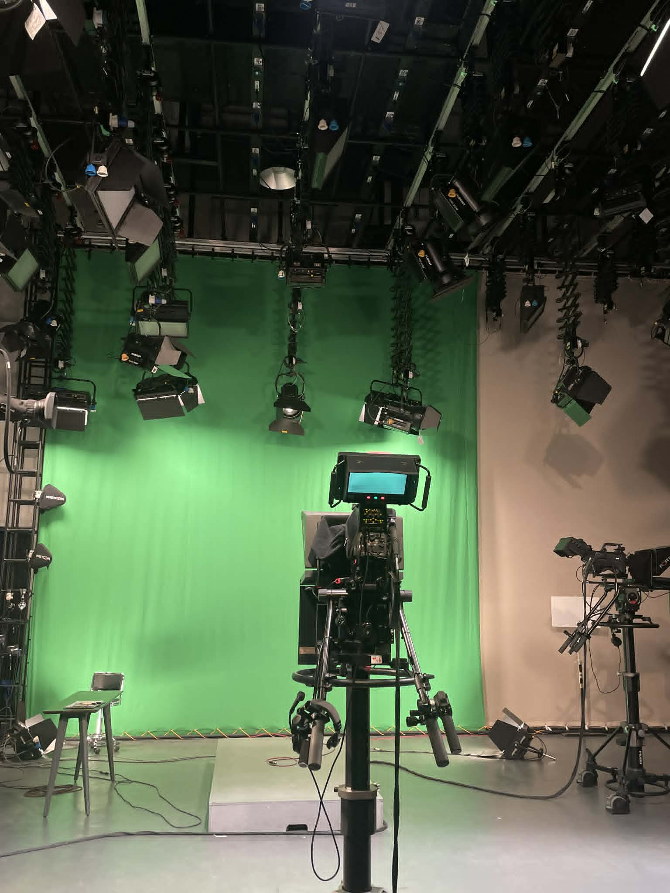
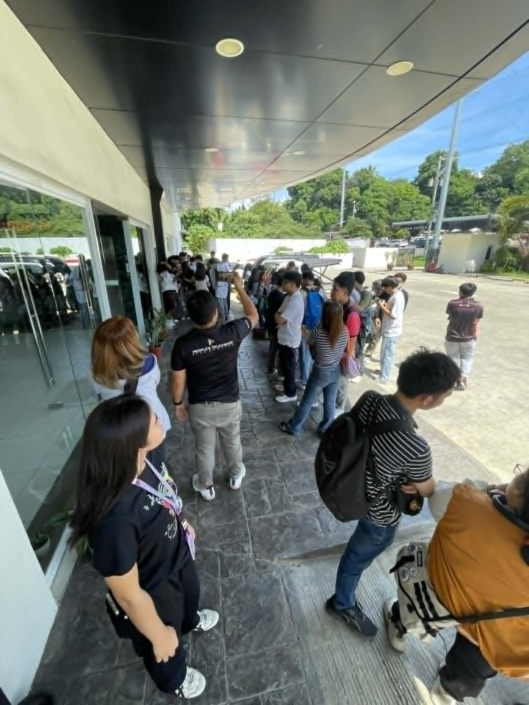
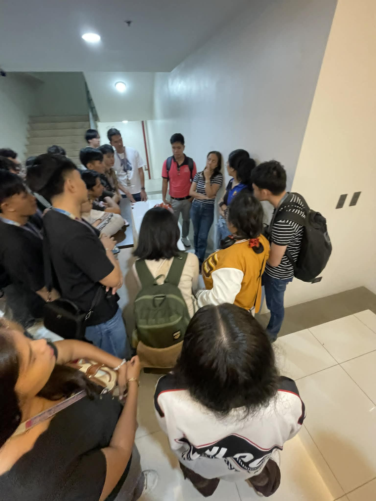
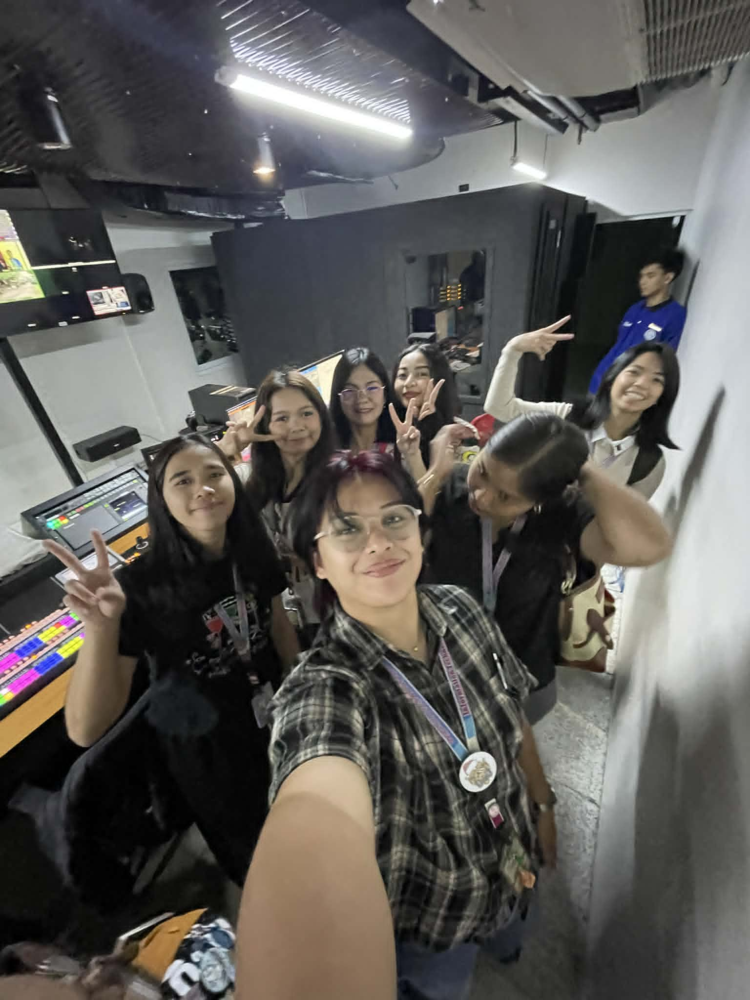
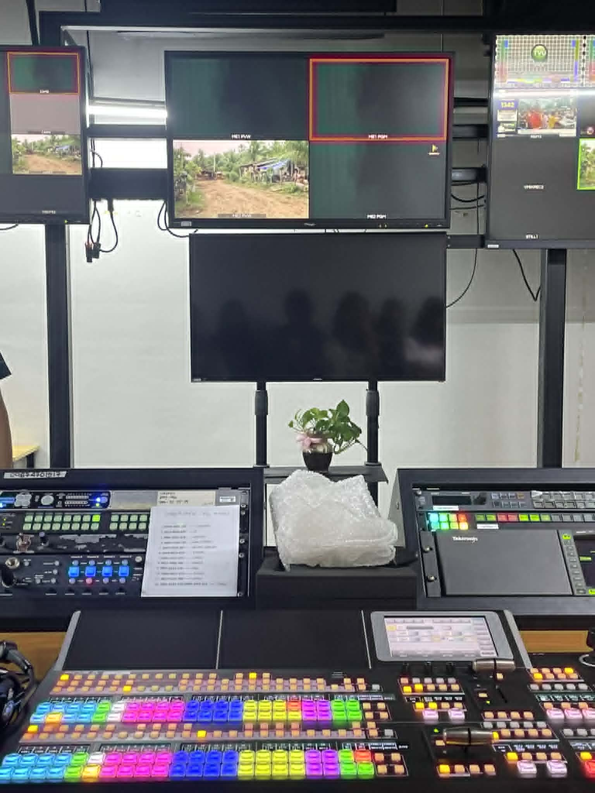
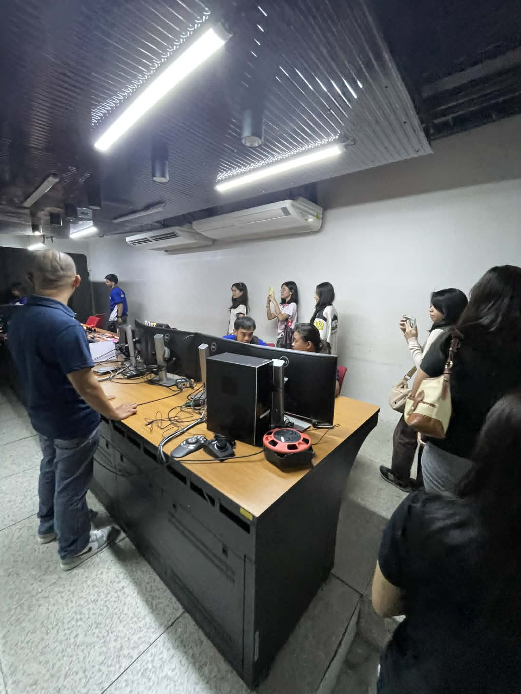
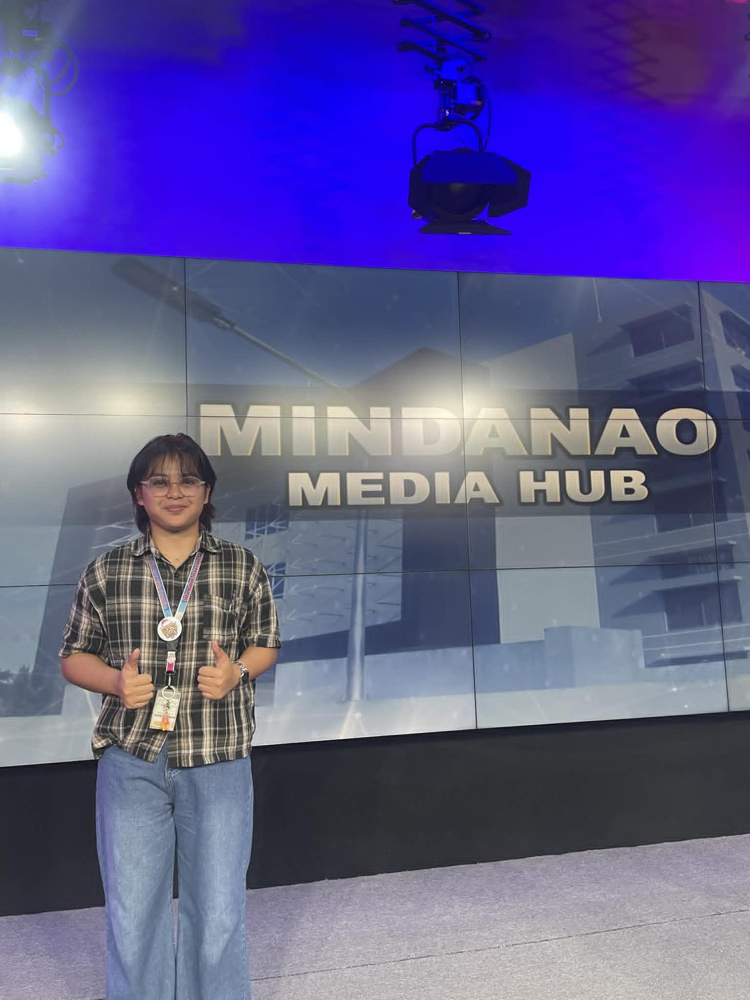
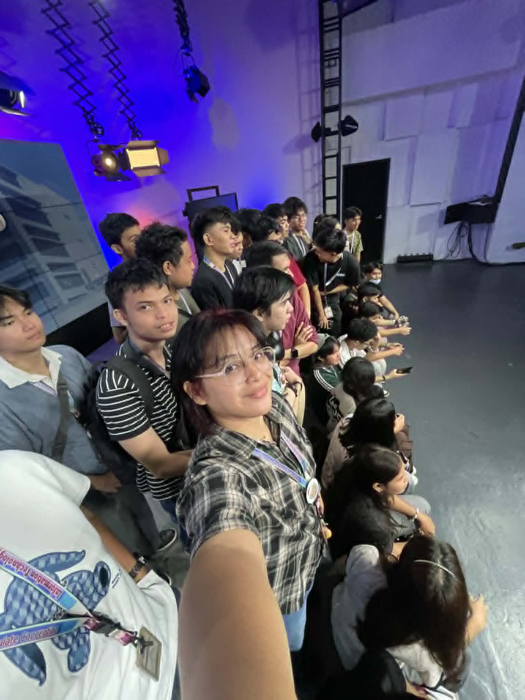
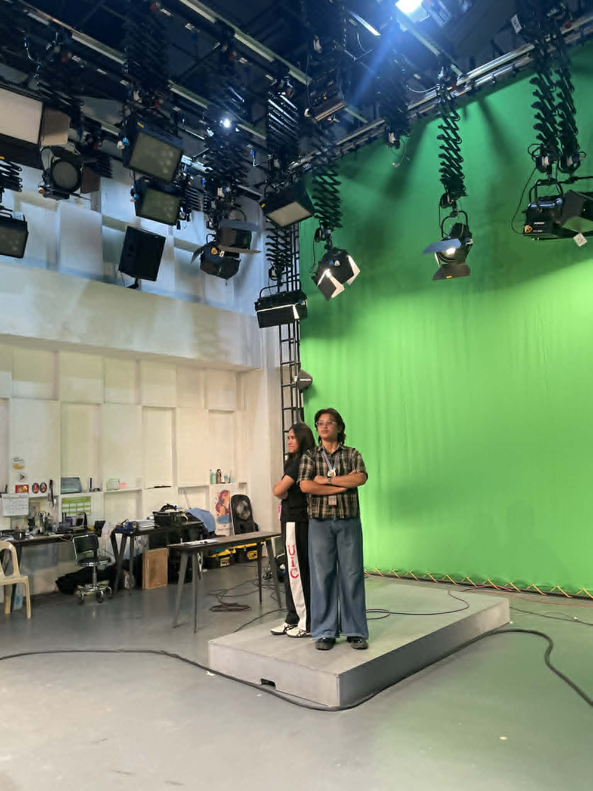

ELEC014.23 — Seminars, Workshops & Tours · College of Computer Studies
Behind the Broadcast:
A Tour of Mindanao Media Hub
An educational industry tour to People's Television Network's Mindanao Media Hub — exploring the technology, infrastructure, and professionals that power broadcast media in Mindanao.
Introduction
Objectives of the Tour
Industry Exposure
Expose students to real-world broadcast media operations and the technology behind live television production.
Professional Insight
Understand what it takes to work as a multimedia professional in a high-demand, live broadcasting environment.
Technology Literacy
Observe and learn about the hardware and software systems used in modern broadcast studios, including switchers, cameras, and control rooms.
Career Awareness
Gain awareness of possible career paths at the intersection of computing and multimedia and broadcast technology.
About the Organizers
Faculty & Coordinators
Cris John David Manero
Faculty Coordinator, College of Computer Studies, UIC. Lead organizer of the ELEC014.23 industry tour.
SHENNA RHEA CLORIBEL
Faculty Coordinator, College of Computer Studies, UIC. Co-organizer and academic supervisor for the tour.
People's Television Network — Mindanao Media Hub
Industry partner for the tour. Hosted the visit at their Mindanao Media Hub facility in Talomo, Davao City.
Tour Schedule
Itinerary — June 10, 2026
Arrival & Assembly at PTV Mindanao Media Hub
Students gathered at the entrance of the Mindanao Media Hub compound in Talomo, Davao City. Faculty coordinators briefed the group on tour protocols and safety reminders.
Welcome & Station Overview
PTV staff welcomed the group and provided an overview of the station's history, mandate as a government broadcaster, and its role as the regional hub for all of Mindanao.
Green Screen Studio Visit
Students toured the main production studio, featuring a large green screen backdrop, professional broadcast cameras, and a full lighting rig. Staff demonstrated how virtual backgrounds are composed during live broadcasts.
Master Control Room & Switcher Demonstration
The group observed the master control room with live feed monitors, a professional broadcast switcher with multi-colored programmable button panels, and video routing systems used during live news and programs.
Camera Control Unit Room
Students were shown the camera control workstations where operators remotely manage and pan cameras on the studio floor using joystick controllers and multi-monitor setups.
Q&A and Photo Documentation
Students interacted with station staff, asked questions about careers in broadcast media, and took documentation photos inside the facility before departure.
Industry Profile
People's Television Network
People's Television Network (PTV) is the Philippine government's flagship television station, operating under the Presidential Communications Office. The Mindanao Media Hub in Talomo, Davao City serves as the regional broadcast center for all of Mindanao, producing and airing news, public affairs programs, and live government broadcasts for the region.
Key Technologies & Innovations Observed
Green Screen Studio
Full chroma-key backdrop with professional rigging, multiple broadcast cameras, and automated lighting systems for virtual set composition.
Broadcast Switcher
High-end live production switcher with hundreds of programmable buttons for real-time switching between camera feeds, graphics, and video sources.
Multi-Monitor Feed Wall
Control room display wall showing simultaneous live feeds from multiple cameras, enabling directors to monitor all inputs before switching on air.
Remote Camera Control
Joystick-operated camera control units allowing operators to remotely pan, tilt, zoom, and adjust focus on all studio cameras from a single room.
Multimedia Gallery
Photos from the Tour
Replace the placeholder boxes below with your actual photos. Rename your image files and update the src attributes in the HTML to match.

📷photo1.jpgGreen screen studio
📷photo2.jpgArrival at Media Hub'"/>
📷photo3.jpgGroup briefing'"/>
📷photo4.jpgControl room visit'"/>
📷photo5.jpgBroadcast switcher'"/>
📷photo6.jpgCamera control room'"/>
📷photo7.jpgMindanao Media Hub sign'"/>
📷photo8.jpgGroup photo in studio'"/>
📷photo9.jpgOn the studio stage'"/>Photos taken during the ELEC014.23 industry tour at PTV Mindanao Media Hub, June 10, 2026, Talomo, Davao City.
Student Reflections & Learnings
Personal Reflection
Visiting the Mindanao Media Hub was an eye-opening experience that broadened my perspective on what it truly means to work in the multimedia and broadcasting industry. Before this tour, I had a general idea of what television production involved — cameras, lights, and a studio. But seeing it up close completely changed that view.
What struck me the most was realizing that being a professional in multimedia is not easy. Every piece of equipment in that facility — from the intricate broadcast switcher with its hundreds of color-coded buttons, to the precisely calibrated camera rigs suspended from the ceiling — requires a deep level of expertise and years of practice to operate. The people behind the broadcast are rarely seen on screen, yet their role is critical to everything the audience experiences.
The green screen studio in particular was fascinating. Seeing the technology that makes virtual backgrounds possible, and understanding the lighting precision required for it to work, made me appreciate how much technical knowledge goes into what seems like a simple visual effect. Likewise, the control room — with its wall of monitors showing simultaneous live feeds — showed me how high-stakes and fast-paced real-time production truly is.
As a BSIT student, this experience reminded me that technology is not just about software and code. It extends into the hardware, systems, and human expertise that power industries like media and broadcasting. This tour inspired me to take my studies more seriously and to stay open to the wide range of careers that a background in IT can lead to.
Key Insights from Industry Exposure
Multimedia is demanding
Professional broadcast work requires deep technical expertise, precision, and the ability to operate under pressure in a live environment.
Technology is everywhere
Modern broadcasting is entirely technology-driven — from digital switchers and IP video routing to automated lighting and remote camera control.
Teamwork is critical
Every broadcast is the result of many specialists working simultaneously — directors, camera operators, switchers, audio engineers — in perfect coordination.
IT connects to all industries
Skills from a BSIT program — systems thinking, hardware knowledge, and problem-solving — are directly applicable in the broadcast media sector.
Conclusion & Acknowledgments
Final Thoughts
The ELEC014.23 industry tour to People's Television Network's Mindanao Media Hub was a meaningful and memorable educational experience. It provided students of UIC's College of Computer Studies with firsthand exposure to a professional broadcast environment, connecting classroom learning to real-world industry practice.
The visit reinforced the importance of technical proficiency, interdisciplinary knowledge, and professional dedication — qualities that are at the core of what it means to work in technology-driven industries. Seeing the scale and complexity of a regional broadcast hub gave us all a deeper appreciation for the field of multimedia and the professionals who make it run.
This e-journal stands as a personal record of that experience — a reminder to continue learning, stay curious, and embrace the challenges that come with pursuing excellence in computer studies.
Acknowledgments
Faculty Coordinator
Faculty Coordinator
Industry Partner
College of Computer Studies
Co-participants